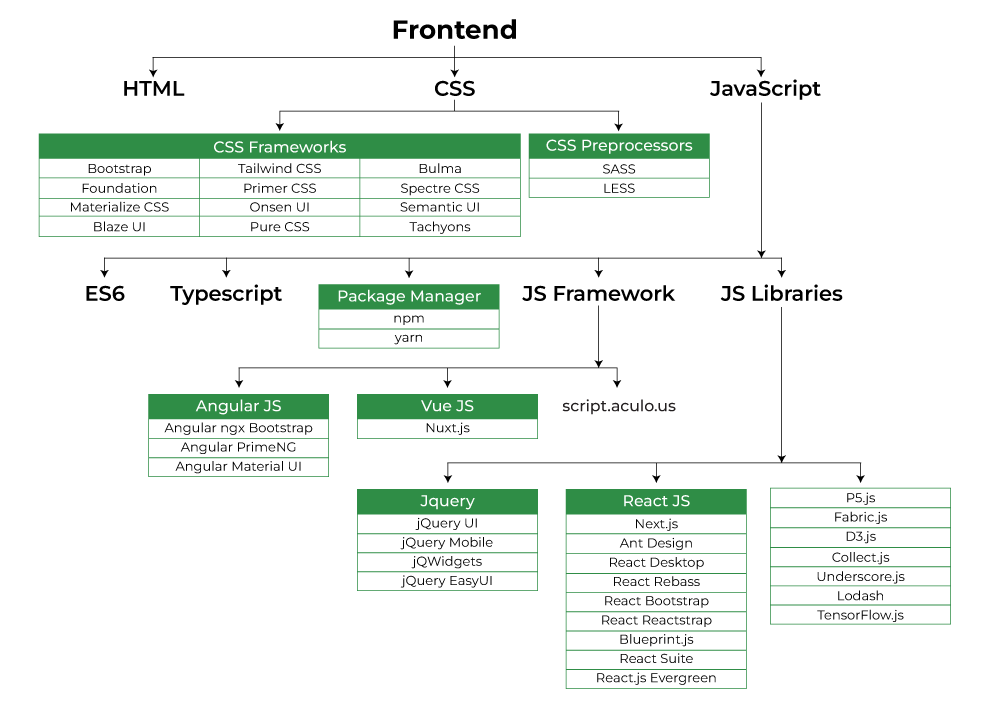

Web development
Web development refers to the creating, building, and maintaining of websites.
It includes aspects such as web design, web publishing, web programming, and database management.
It is the creation of an application that works over the internet i.e. websites.

The word Web Development is made up of two words, that is:
-
Web:
It refers to websites, web pages or anything that works over the internet.
- Development: It refers to building the application from scratch.
Web Development can be classified into two ways:
Frontend Development
The part of a website where the user interacts directly is termed as front end. It is also referred to as the 'client sid' of the application.
Frontend Roadmap
Popular Frontend Technologies
-
HTML: HTML stands for HyperText Markup Language. It is used to design the front end portion of web pages using markup language.
It acts as a skeleton for a website since it is used to make the structure of a website. -
CSS: Cascading Style Sheets fondly referred to as CSS is a simply designed language intended to simplify the process of making web pages presentable.
It is used to style our website. -
JavaScript: JavaScript is a scripting language used to provide a dynamic behavior to our website.
-
Bootstrap: Bootstrap is a free and open-source tool collection for creating responsive websites and web applications.
It is the most popular CSS framework for developing responsive, mobile-first websites. Nowadays, the websites are perfect for all browsers
(IE, Firefox, and Chrome) and for all sizes of screens (Desktop, Tablets, Phablet, and Phones).
Backend Development
Backend is the server side of a website. It is part of the website that users cannot
see and interact with.
It is the portion of software that does not come in direct contact with the users. It
is used to store and arrange data.
Backend Roadmap

Popular Backend Technologies
-
PHP: PHP is a server-side scripting language designed specifically for web development.
-
Java: Java is one of the most popular and widely used programming languages. It is highly scalable.
-
Python: Python is a programming language that lets you work quickly and integrate systems more efficiently.
-
Node.js: Node.js is an open source and cross-platform runtime environment for executing JavaScript code outside a browser.